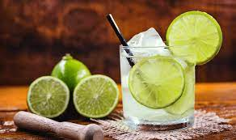

Clasicos en Argentina
Fernet con Cola

Descripcion
Originario de Italia, el fernet con cola se a convertido en uno de los tragos mas caracteristicos de la cultura argentina. Luego de pasar por muchas mezclas que de entre ellas se destaca a soda, juegos y hasta puro.
En la decada de los 80 se empezo a mezclar con la famosa bebida Cola, y de ese momento se volvieron inseparables.
Ingredientes
- Fernet
- Coca-Cola
- Hielo
Preparacion
- Ponemos en un vaso grande 2 o 3 hielos y vertemos el fernet en una proporcion de 30% del vaso.
- Luego agregamos la Coca-Cola de a poco para que se valla mezclando, pero para que no genere tanta espuma.
- Disfrute!
Gin Tonic
Descripcion
Entre los distintos tragos que exiten, el gin tonic se lleva todas las miradas por ser una bebida alcohólica suave y refrescante todo al mismo tiempo.Menos es más. No se necesita una gran cantidad de frutas ni especias, frutas exóticas o flores silvestres solo una buena combinacion de los elmentos y sus cantidades para crear algo equilibrado.
Ingredientes
- Ginebra
- Hielo
- Agua Tonnica
- Algun Citrico: limon,lima o naranja
- Vaso; uno adecuado y con la cpacidad suficiente para hacer la mezcla
Preparacion
- Poner 6 hielos en una copa grande, 1 rodaja de lima y 50 ml de ginebra de buena calidad. Recomendables seagram's (ginebra extra seca) y Bombay Zaphire.
- Vertir 200 ml de agua tónica. La idea es no dejar escapar el gas, de esta manera obtendrás un excelente trago.
- Servir añadiéndole una hoja de menta, cereza o fruta preferida.
Caipirinha
Descripcion
La caipirinha, el cóctel más popular de Brasil y una bebida reconocida como la más famosa de este país en todo el mundo. Tan famosa es en Brasil, que en el año 2003 fue declarada como la bebida típica de Brasil por parte del gobierno nacional. y es que después del mojito cubano, uno de los cócteles que más se beben en el mundo es la caipirinha.
Ingredientes
- 1 limon
- 1 cda de azucar
- Cachaça o ron blanco
- Hielo en cubos
- Rodaja de limon para servir
Preparacion
- Vamos a iniciar a preparar nuestra caipirinha, cortando los limones en gajos o rodajas.
- Si tienes una coctelera la puedes usar, de lo contrario emplea un vaso largo y agrandado.
- Vas a colocar el limón y el azúcar, con un mortero o tenedor, vamos a triturar los limones en el fondo del vaso para que suelten el zumo y se unan con el azúcar. Mezclamos muy bien.
- Posteriormente, añade hielo en cubos hasta arriba del vaso.
- Luego, agregarás la cachaça hasta el nivel que prefieras, dependerá de lo que tanto quieras tomar.
- Mezcla un poco y sírvelo con algunas rodajas de limón. Tu caipirinha estará lista.